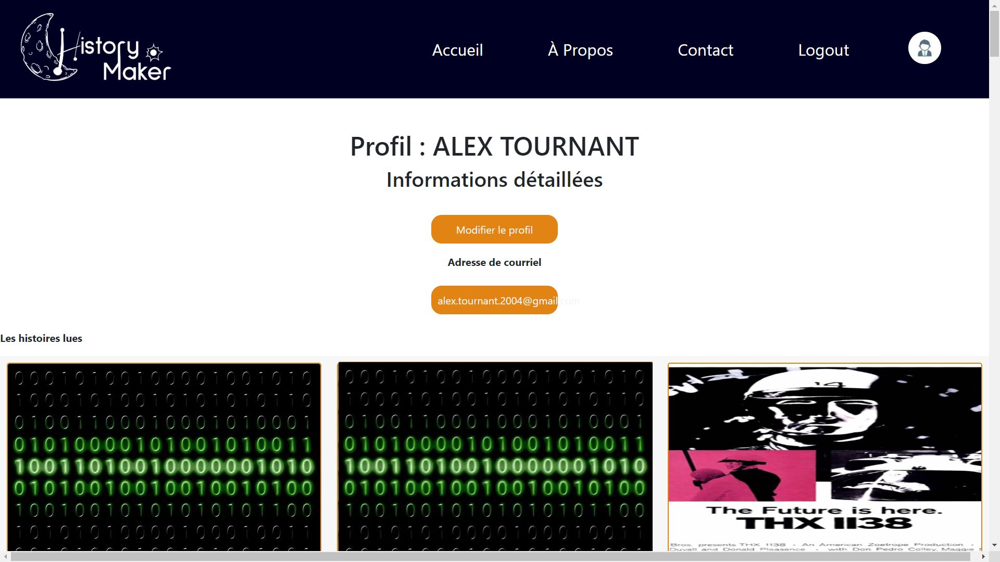
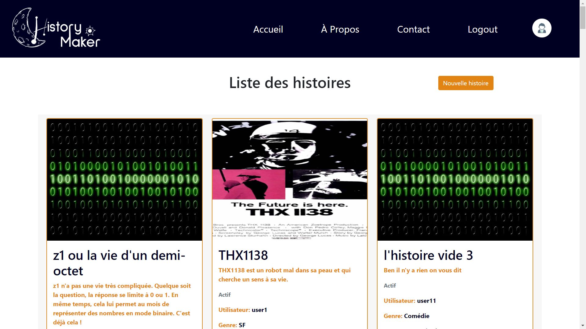
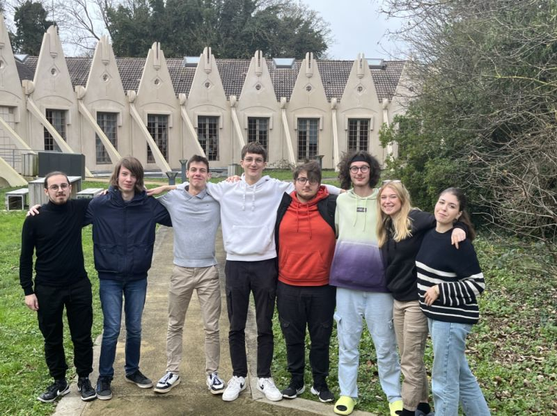

History Maker
As part of the Web Marathon, we formed a team of 4 computer science students and 4 MMI students, resulting in HistoryMaker, a website for reading and creating stories where you are the hero!
The goal of the web marathon was to create a website from scratch on a given theme in 48 hours.
The workload was intense, but we didn't give up, and we finished implementing all the basic features.
On HistoryMaker, you have the ability to:
- Read stories (sorted or not based on user choice)
- Create your own story
- Create an account or log in
- Visit user profiles
- Bookmark stories
So don't wait any longer and go read a story in the evening before going to sleep!

(Homepage of the site)

(User profile page)

(Page listing stories)

(Team photo)